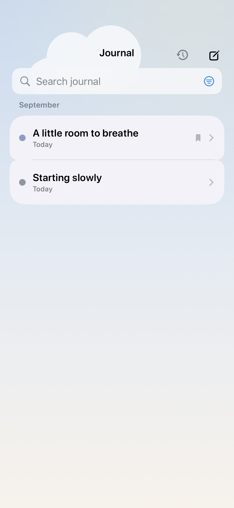

When there’s more to say
Leave a little
of the day here.
A sentence, a page, a thought you want to come back to. Write in your journal, add a little context, and keep the entries that matter to you.
Search your words. Find your kept entries. Pick up a draft.